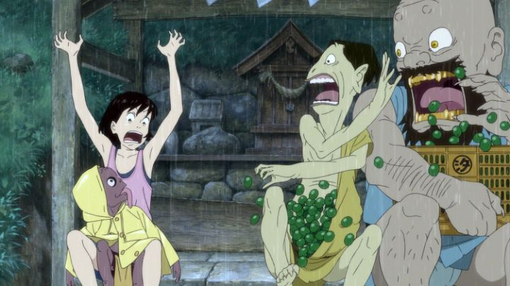

The 2011 anime film "A Letter to Momo" is a sweet, if somewhat predictable, family movie. Momo is a young pre-teen girl, typically wearing a boring summer top and dress and sandals, moving out the boonies with her single mother, who takes classes during the day. They live in an old house in the Japanese town, far from any shopping malls or supermarkets. Momo is quiet and shy, has trouble making friends, an issue compounded by the new surroundings, and she clings behind her mother often, the type of behavior you would expect from someone half her age. Leaving her alone at home often, she also complains of boredom, only truly acting like herself when alone with her. We also quickly learn that Momo's father passed away in an accident, shortly after an arguement she had with him: they never had the chance to make up, and among his things, Momo discovers an unfinished letter, starting with "To Momo" and nothing else. All this while, she misses him, regretting their last interaction, and her desparately wishing to know what he would have wrote as a final message.It's a by-the-numbers coming-of-age story, through and through. And like most animated stories of this type, there's a hint of fantasy. Momo starts seeing shadows of three Yokai wondering around her new house, and finally, they appear in front of her. Based on traditional Japanese designs, one is a large troll-like figure with a gapping mouth, one is a medium-sized frog-like one, and the third is a monkey-like goblin with a long tongue. A trio of mischievous fools, they're trapped on Earth rather than heaven due to their behavior, and quietly steal food and other items to sustain themselves. When it's clear that they and Momo can see each other, the story shifts, and the Yokai do as Momo asks (or otherwise causing havoc and other misunderstandings), helping her in a small adventure that culminates into a large, exciting climax: being beings from the afterlife, they might be a connection to Momo's deceased dad.There are two distinct movies in one here. One is the grouned story of Momo adjusting to her new home. The setting is well detailed, conveying a realistic town that feels lived-in. People are animated... carefully, which isn't to say that they are animated well, but with great caution, such that one could mistake the people for being CGI models, or at least assume that models were used to trace over. Momo has a variety of neighbors of varying ages, each mildly quirky, but mostly just average in the way you might expect. The movie relishes in the slow environment, taking its time with characters walking, eating, or doing daily, mundane activities. Eventually, Momo and her mother grow distant and their relationship suffers. These scenes from the movie are fine, and are the type that will make any parent happy to share the movie with their children, but are, quite frankly, boring.The other movie are the scenes when the Yokai are involved. When Momo first starts seeing their shadows, she freaks out, screaming and running as fast she can, her face and body suddenly much more expressive, and frankly, much more likable. The Yokai talk as if no one can see them, often bad-mouthing people around them or telling jokes with potty-humor to each other. Reluctant to help Momo, they try to trick her a few times, failing to our amusement. And there's plenty of physical humor with them too. These scenes are far more entertaining, single-handedly elevating the movie, and getting even better when other cute Yokai get involved. But unfortunately, these two types of movies feel too different and don't blend all that well. And since the Yokai moments don't have a sense of purpose until well-into the final half of the movie, the story overall tends to drag, especially given the two-hour runtime. The beauty of life can only carry a movie so far. There's a strong sense that Production I.G. was going for "Studio Ghibli" in tone and story, and the movie recalls feelings from "My Neighbor Totoro," "Spirited Away" or "Whisper of the Heart." It's a shame it can't quite find that right tonal balance, and my gut reaction is that young children would fall asleep watching before the halfway point. Cutting out 20 minutes or so of the boring stuff would have done wonders.The production values, as previously mentioned, are better than average, and really shine when the Yokai are invoved, distinct and colorful, cute and strange, well animated too. The music and English-dub are also reasonably good (fun when it needs to be, but also passive when it needs to be). "A Letter To Momo" is a good movie, and in some ways, a very good one, which I appreciated more after a second viewing. Coming-of-age stories are difficult to write in a way that makes them fun, or with the wealth of stories that exist in the genre, all that meaningful. "Momo" comes close though, thanks to inspired humor with the fantastical element it chose.
- "Ani" More reviews can be found at : https://2danicritic.github.io/ Previous review: review_A_Cat_in_Paris Next review: review_A_Liar's_Autobiography_-_The_Untrue_Story_of_Monty_Python's_Graham_Chapman